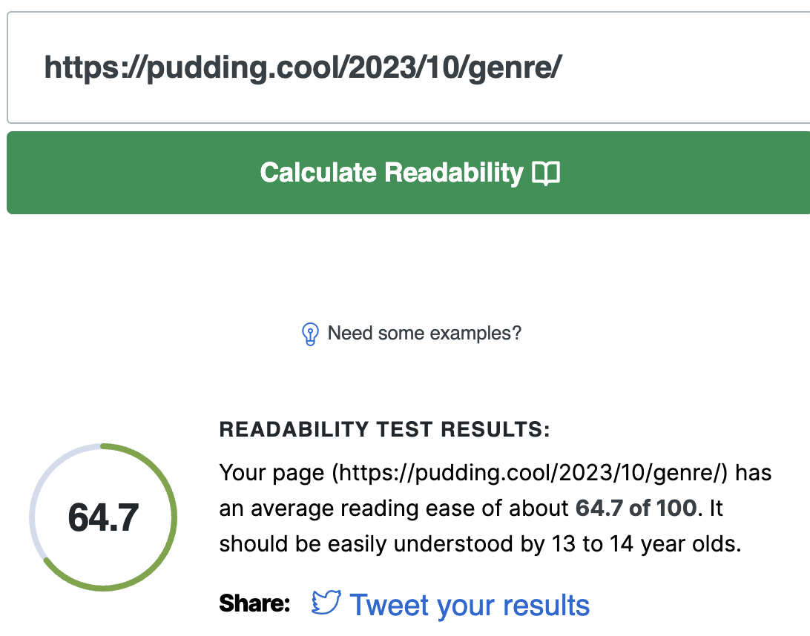
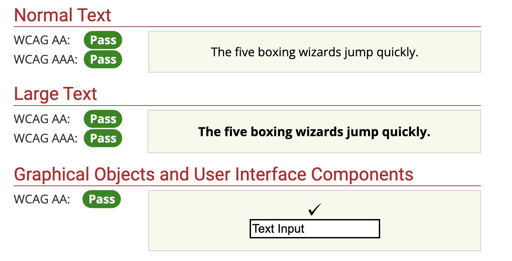

Inputting this website into the evaluation tool shows that the website passes the test and that there were no errors detected. This made sense since the videos, links and audio files are all very easy and simple to use. I think the simplicity of the website also greatly helps with the accessibility of the website.
The language of the website is easy to understand but still somewhat complex. It is at a decent academic level but still can be understood by a general audience
The website also easily passes the readability test since it is using a light background with black as the font colour. The bright beige colour is also pleasing to look at and doesnt stand out too much which is also and added benefit to using those colours for the background, the green icons also match well with the theme of the website which is to discuss spotify.
The biggest takeaways that I get from evaluating this website using the tools was that keeping the website layout minimalistic and simple is very good. It means I can convey my message more clearly and effectively. I find that some websites that use videos or images that aren't very relevant to the subject matter can be very distracting.